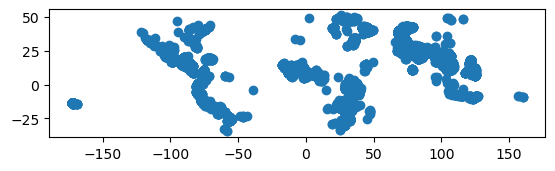
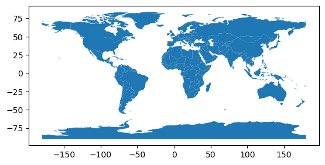
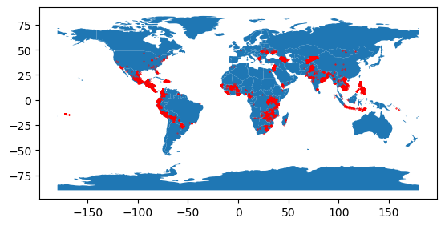
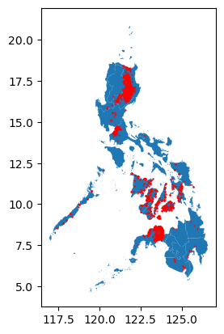

Data_Mining_Kaggle
Exercise 1 - Your First Map
| Jupyter에서 실행하기 |
1 Introduction
Kiva.org is an online crowdfunding platform extending financial services to poor people around the world. Kiva lenders have provided over $1 billion dollars in loans to over 2 million people.

Kiva reaches some of the most remote places in the world through their global network of “Field Partners”. These partners are local organizations working in communities to vet borrowers, provide services, and administer loans.
In this exercise, you’ll investigate Kiva loans in the Philippines. Can you identify regions that might be outside of Kiva’s current network, in order to identify opportunities for recruiting new Field Partners?
To get started, run the code cell below to set up our feedback system.
This notebook is an exercise in the Geospatial Analysis course. You can reference the tutorial at this link.
import geopandas as gpd
import matplotlib.pyplot as plt2 Get the data
- 다음 셀을 사용하여 loans_filepath에 있는 모양 파일을 로드하여 GeoDataFrame world_loans를 만듭니다.
loans_filepath = "C:/Users\seong taek/Desktop/archive/kiva_loans/kiva_loans/kiva_loans.shp"
### Your code here: Load the data
world_loans = gpd.read_file(loans_filepath)
### Uncomment to view the first five rows of the data
world_loans.head()| Partner ID | Field Part | sector | Loan Theme | country | amount | geometry | |
|---|---|---|---|---|---|---|---|
| 0 | 9 | KREDIT Microfinance Institution | General Financial Inclusion | Higher Education | Cambodia | 450 | POINT (102.89751 13.66726) |
| 1 | 9 | KREDIT Microfinance Institution | General Financial Inclusion | Vulnerable Populations | Cambodia | 20275 | POINT (102.98962 13.02870) |
| 2 | 9 | KREDIT Microfinance Institution | General Financial Inclusion | Higher Education | Cambodia | 9150 | POINT (102.98962 13.02870) |
| 3 | 9 | KREDIT Microfinance Institution | General Financial Inclusion | Vulnerable Populations | Cambodia | 604950 | POINT (105.31312 12.09829) |
| 4 | 9 | KREDIT Microfinance Institution | General Financial Inclusion | Sanitation | Cambodia | 275 | POINT (105.31312 12.09829) |
2.1 world_loans 데이터셋 시각화
world_loans.plot()<Axes: >
3 Plot the data.
- 변경하지 않고 다음 코드 셀을 실행하여 국가 경계가 포함된 GeoDataFrame 월드를 로드합니다
### This dataset is provided in GeoPandas
world_filepath = gpd.datasets.get_path('naturalearth_lowres')
world = gpd.read_file(world_filepath)
world.head()| pop_est | continent | name | iso_a3 | gdp_md_est | geometry | |
|---|---|---|---|---|---|---|
| 0 | 889953.0 | Oceania | Fiji | FJI | 5496 | MULTIPOLYGON (((180.00000 -16.06713, 180.00000… |
| 1 | 58005463.0 | Africa | Tanzania | TZA | 63177 | POLYGON ((33.90371 -0.95000, 34.07262 -1.05982… |
| 2 | 603253.0 | Africa | W. Sahara | ESH | 907 | POLYGON ((-8.66559 27.65643, -8.66512 27.58948… |
| 3 | 37589262.0 | North America | Canada | CAN | 1736425 | MULTIPOLYGON (((-122.84000 49.00000, -122.9742… |
| 4 | 328239523.0 | North America | United States of America | USA | 21433226 | MULTIPOLYGON (((-122.84000 49.00000, -120.0000… |
3.1 world 데이터셋 시각화
world.plot()<Axes: >
3.2 World and World_loans GeoDataFrames를 사용하여 전 세계 Kiva 대출 위치 시각화하기
### Your code here
world_data = world.plot()
world_loans.plot(ax=world_data, color='red', markersize=0.1)<Axes: >
4 Select loans based in the Philippines.
- 다음으로, 당신은 필리핀에 기반을 둔 대출에 초점을 맞출 것입니다. 다음 코드 셀을 사용하여 필리핀에 기반을 둔 대출이 있는 world_loans의 모든 행을 포함하는 GeoDataFrame PHL_loans를 생성합니다
# Your code here
PHL_loans = world_loans.loc[world_loans['country'] =='Philippines']
PHL_loans.head()| Partner ID | Field Part | sector | Loan Theme | country | amount | geometry | |
|---|---|---|---|---|---|---|---|
| 2859 | 123 | Alalay sa Kaunlaran (ASKI) | General Financial Inclusion | General | Philippines | 400 | POINT (121.73961 17.64228) |
| 2860 | 123 | Alalay sa Kaunlaran (ASKI) | General Financial Inclusion | General | Philippines | 400 | POINT (121.74169 17.63235) |
| 2861 | 123 | Alalay sa Kaunlaran (ASKI) | General Financial Inclusion | General | Philippines | 400 | POINT (121.46667 16.60000) |
| 2862 | 123 | Alalay sa Kaunlaran (ASKI) | General Financial Inclusion | General | Philippines | 6050 | POINT (121.73333 17.83333) |
| 2863 | 123 | Alalay sa Kaunlaran (ASKI) | General Financial Inclusion | General | Philippines | 625 | POINT (121.51800 16.72368) |
5 Understand loans in the Philippines.
- 변경 없이 다음 코드 셀을 실행하여 필리핀의 모든 섬에 대한 경계가 포함된 GeoDataFrame “PHL”을 로드합니다
# Load a KML file containing island boundaries
gpd.io.file.fiona.drvsupport.supported_drivers['KML'] = 'rw'
PHL = gpd.read_file("C:/Users\seong taek/Desktop/archive/Philippines_AL258.kml", driver='KML')
PHL.head()| Name | Description | geometry | |
|---|---|---|---|
| 0 | Autonomous Region in Muslim Mindanao | MULTIPOLYGON (((119.46690 4.58718, 119.46653 4… | |
| 1 | Bicol Region | MULTIPOLYGON (((124.04577 11.57862, 124.04594 … | |
| 2 | Cagayan Valley | MULTIPOLYGON (((122.51581 17.04436, 122.51568 … | |
| 3 | Calabarzon | MULTIPOLYGON (((120.49202 14.05403, 120.49201 … | |
| 4 | Caraga | MULTIPOLYGON (((126.45401 8.24400, 126.45407 8… |
5.1 PHL’ 및 ‘PHL_loans’ GeoDataFrames를 사용하여 필리핀의 대출을 시각화할 수 있습니다.
# Your code here
PHL = PHL.plot()
PHL_loans.plot(ax=PHL, color='red', markersize=0.2)<Axes: >
새로운 Field Partners를 모집하는 데 유용한 섬을 찾을 수 있습니까? 현재 키바의 손이 닿지 않는 곳에 보이는 섬이 있습니까?
this map 은 질문에 대답하는 데 유용할 수 있습니다.
6 Keep going
Continue to learn about coordinate reference systems.
Have questions or comments? Visit the course discussion forum to chat with other learners.